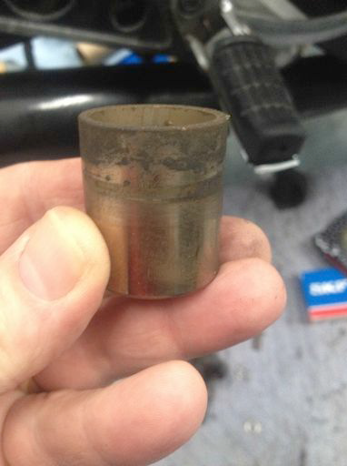
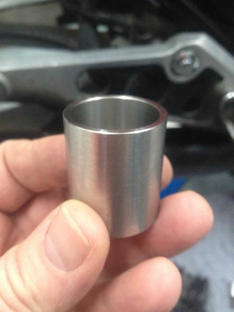
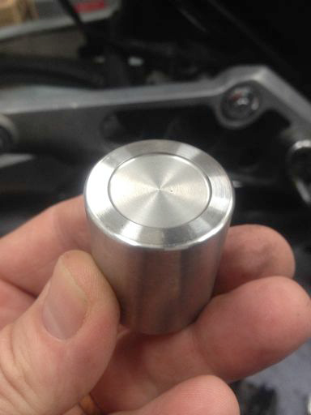
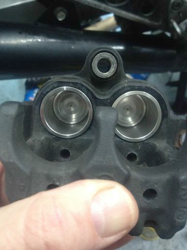

I acquired my 1986 CBX750 here in Canada. I have to be honest here, until the bike was offered to me, I had never heard of the CBX750. Having owned a couple of 79¬81 CB750K’s, I had an idea of what I was getting into mechanically. Or so I thought. It is quite a different machine and I love it. I would be curious to know where my bike came from since I don’t think they were officially imported in to Canada.
After getting the bike, I had to sort out the front suspension and fork seals, which were leaking. I also thought it would be a good idea to replace the original rubber brake lines and I contacted HEL performance. http://www.helperformance.ca/. They are UK headquartered and Kris in Calgary, Alberta, Canada holds the North American license to HEL and has all of the HEL fittings and tooling to fabricate the hose assemblies. He had the CBX750F in the system so he had the line length and fitting types in his database and in stock. I ordered a full set of front and back lines and they are fantastic. Kris said that I could order a front set that would use the built in crossover Tee (a three-line set) or I could go with a two-line set that bypassed the crossover Tee. I went with the three-line front set. I found the master cylinder to Tee line about 4 inches too long but all of the others were perfect. I elected to send the long one back to Kris so that it would match the OEM length. I did not want it chaffing under the fairing. I would suggest that if you order a set from HEL, you send then the master cylinder to Tee hose as a sample or at least confirm the total length. HEL claims that their hose kits are DOT approved and that was an important factor for me in my selection of the hoses for replacement.
When I got to the rear wheel brake, I noticed that the rotor had received a lot more wear than I expected. I figured that the last owner either had a heavy right foot or that the pistons were sticking. It was the pistons.

This was after a significant clean up. The hard chrome finish had failed.
So, my next challenge was to replace the pistons. I was able to source caliper seals and dust boots from Honda at a reasonable price but the pistons were expensive. I also knew that they would eventually corrode and bind again. I had replaced a Norton Commando set of caliper pistons in stainless so I was wondering if I could find Honda pistons in Stainless. The Internet came to the rescue. I fairly quickly found Rainer Proebstl. He manufactures a number of piston sizes that fit many standard Honda calipers. His Type 4 pistons were attractively priced and when received, proved to be of excellent quality in terms of size, fit and finish.

The reveal….

They are exact replicas of the original but in stainless. Even the recess in the face of the piston has been reproduced.

The pistons are installed after a little wipe of some clean fluid and ready for final re-assembly and connection with the new rear stainless brake lines.
I am installing new pads and also a new rear rotor. I found a new condition rotor at a wreckers yard that was identical but out of a different model, a VFR 950 I think.

Rainer’s pistons can be ordered online at, www.wingovations.com. You can also contact Rainer through www.proebstl.net/pistons.htmlBrian Holmes,
I can be reached at
brian(at)rocketperformance.ca